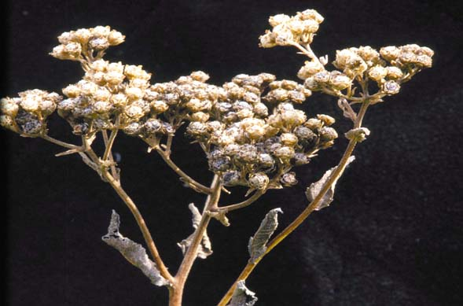

Parthenium integrifolium
Family: Asteraceae
Wild Quinine
Swink/Wilhelm #8
FLOWERING:Late spring to mid-summer, May to July
SEED TIMING:Mid-summer
HABITAT: Mesic black soil prairies, sand prairies, openings in rocky upland forests, savannas, scrubby barrens, limestone glades, and thickets
DIAGNOSTIC FEATURES: 2-3 feet tall in flower. Rosette of basal leaves up to 6" long and 4" wide on long petioles. Medium green, sandpapery texture, coarsely serrated margins, broadly lanceolate to ovate to cordate shape. Stout flowering stalk with smaller alternate leaves on short petioles and erect side stems bearing flat-headed clusters of small white flowerheads resembling cauliflower. Each flowerhead about 1/3" across with numerous disk florets and greatly reduced ray florets. Thickened, somewhat tuberous central taproot with rhizomes promoting vegetative spread.
TO PICK: When flowerheads turn brown and achenes have developed without tufts of hair. Harvest the entire inflorescence.